Worship
Join us as we praise and worship God together.
WELCOME
A place of worship, love, faith and transformation. Join us as we grow together in Christ.
Discover MoreWHO WE ARE
Glorious City of Christ is a place where people come together to worship God, grow in faith and experience His love.
GROW AND SERVE
Join us as we praise and worship God together.
Grow in faith through prayer and fellowship.
Learn and grow through the teaching of God's Word.
WHO WE ARE
To raise a generation of believers who are passionate about God, rooted in His Word and committed to transforming lives.
To preach the Gospel, make disciples, demonstrate God's love and build a community of faith.
OUR LEADERS
Senior Pastor

Ministry Leader
Ministry Coordinator
Select a picture to view it larger. Replace sample leadership photos with approved church photos when ready.
JOIN US
Every Sunday
10:00 AM – 12:00 PMEvery Saturday
5:00 AM – 6:00 AMEvery Thursday and Saturday
6:00 PM – 8:00 PMGROW IN THE WORD
Watch our messages and worship recordings in the video section below.
STAY CONNECTED
Please contact the church for information about upcoming programmes and special events.
OUR MEMORIES


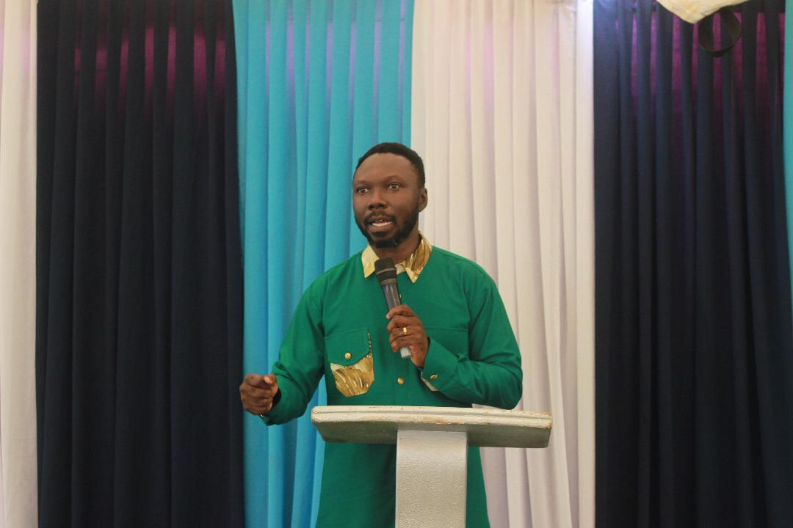
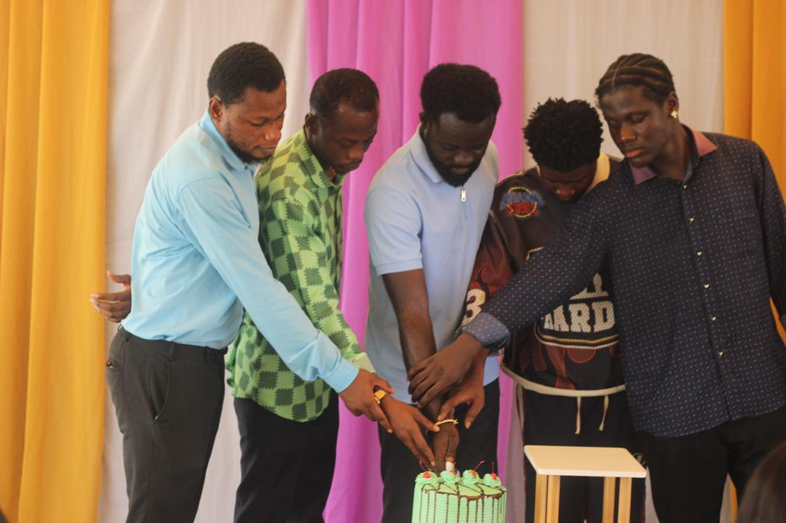
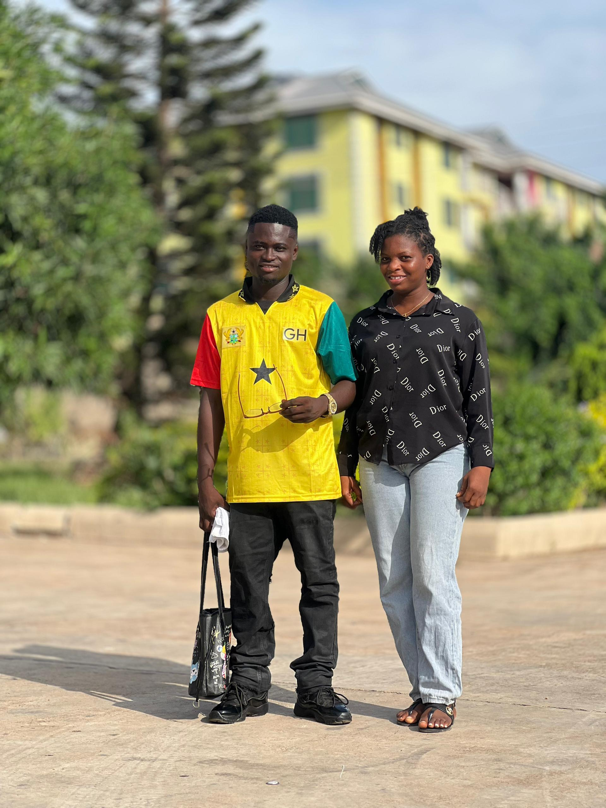
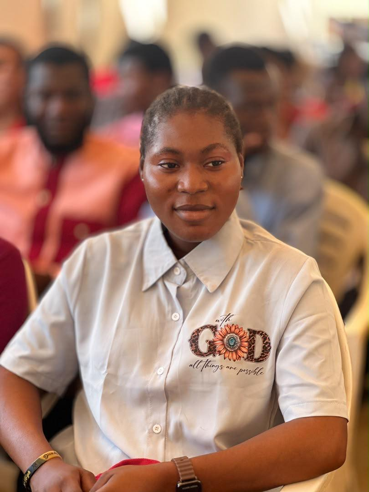
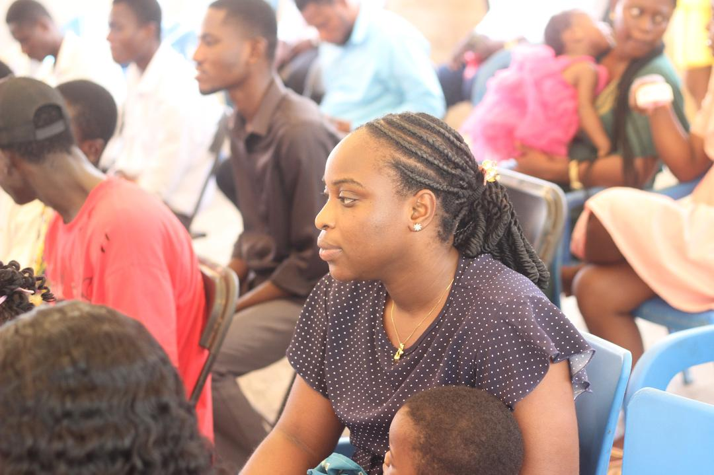
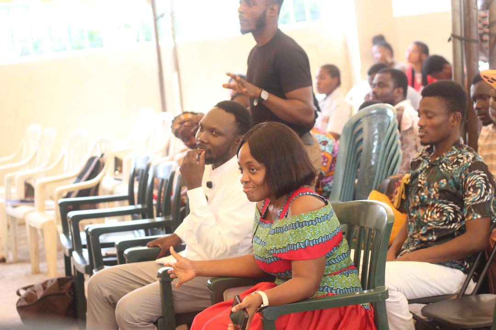
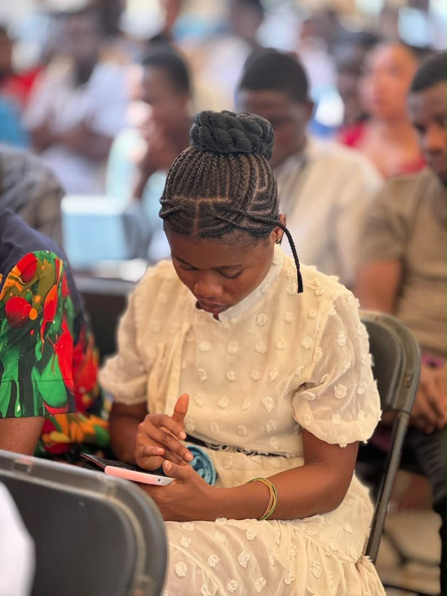
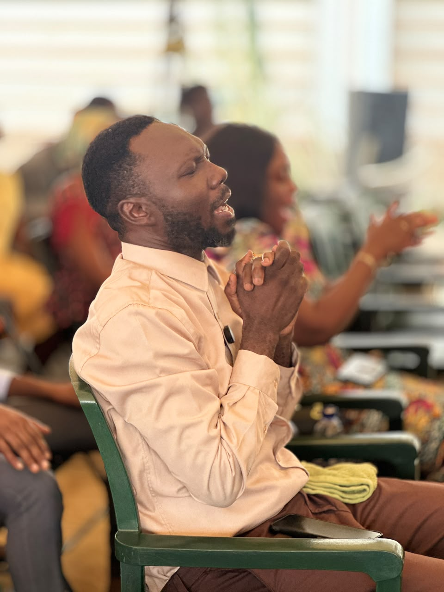
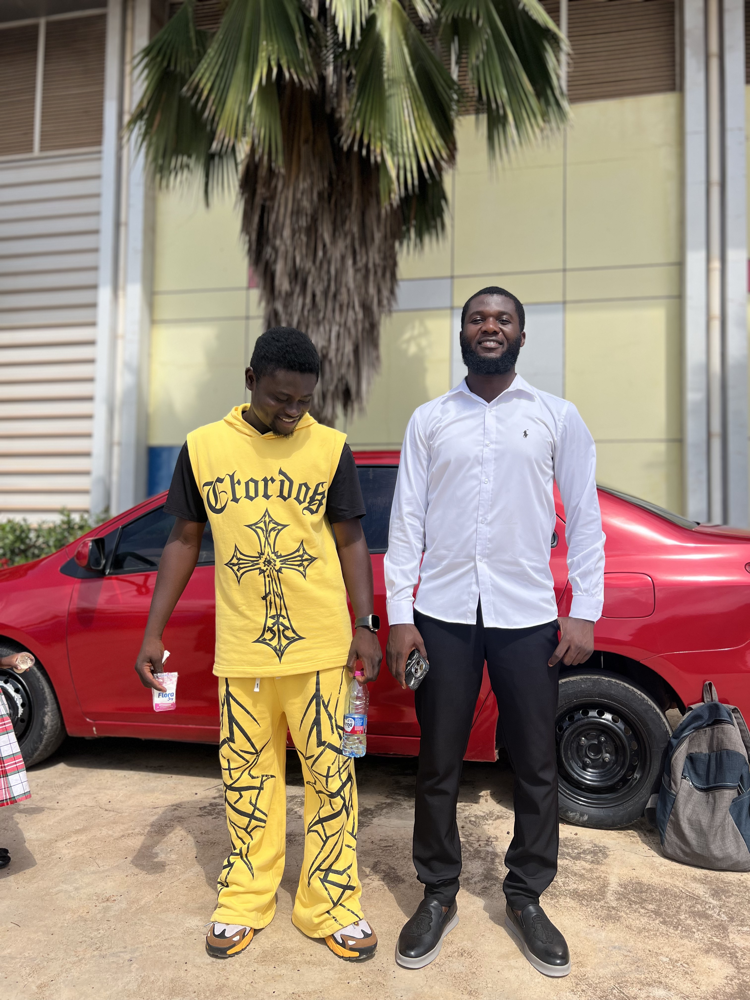
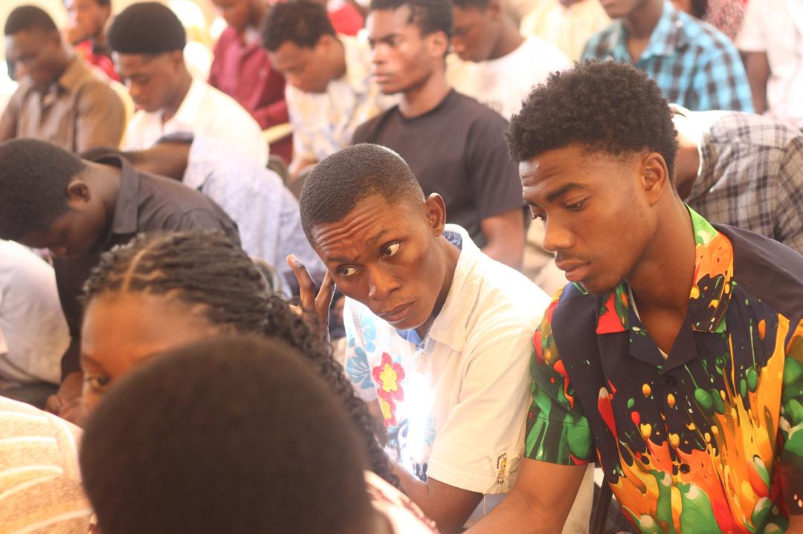
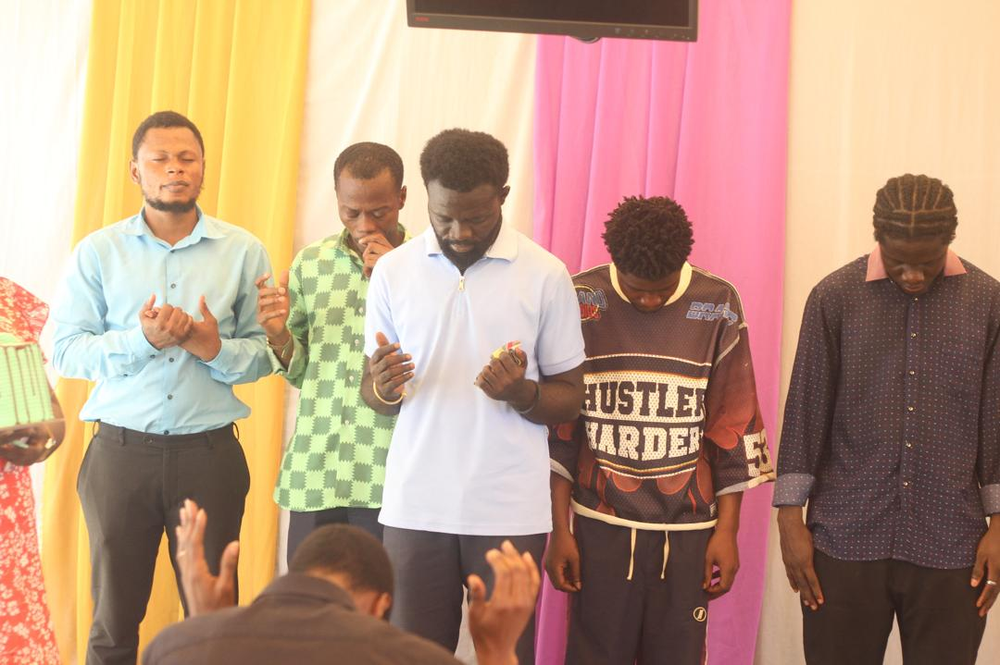
Select any picture to view it larger. If a picture is missing, check its filename and letter case in the images folder.
WATCH AND GROW
Teaching by Apostle Joshua Selman
Glorious City of Christ
COME WORSHIP WITH US
Ahinsan Estate, Kumasi, Ashanti Region, Ghana
GET IN TOUCH
Have a question, prayer request or want to visit our church? Get in touch with us.
Ahinsan Estate, Kumasi, Ashanti Region, Ghana
To be announced